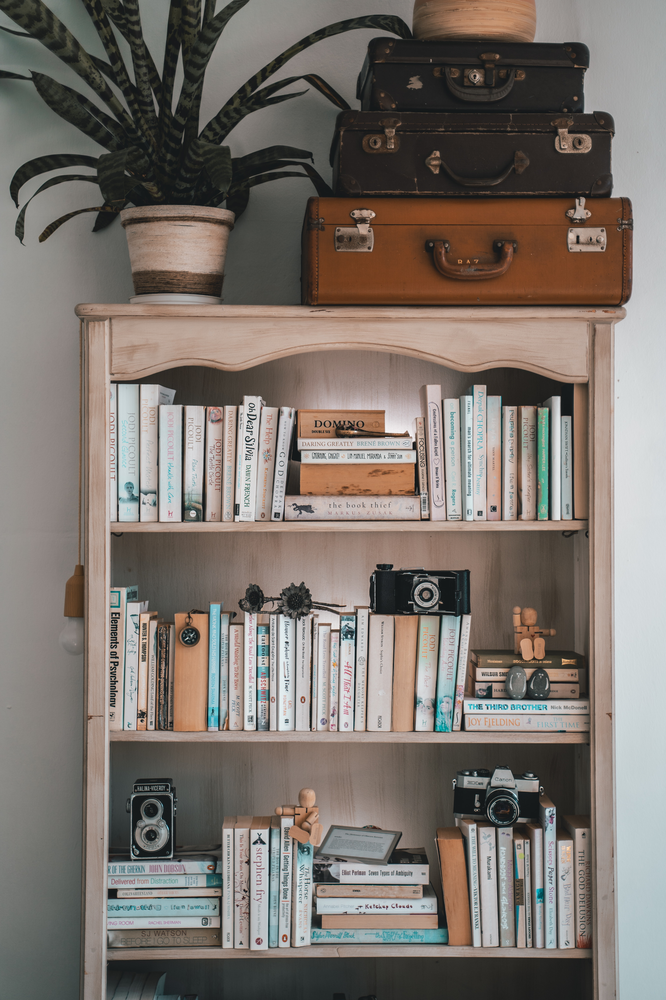

Librero estilo vintage
De diseño innovador, el librero es una pieza funcional y decorativa, fabricado con madera de pino industrializada y con recubrimiento melaminico color gris y acabado vintage; mejora la distribución de tus pertenencias.Medidas: ANCHO LARGO ALTO Librero 80cms 28cms 195cms